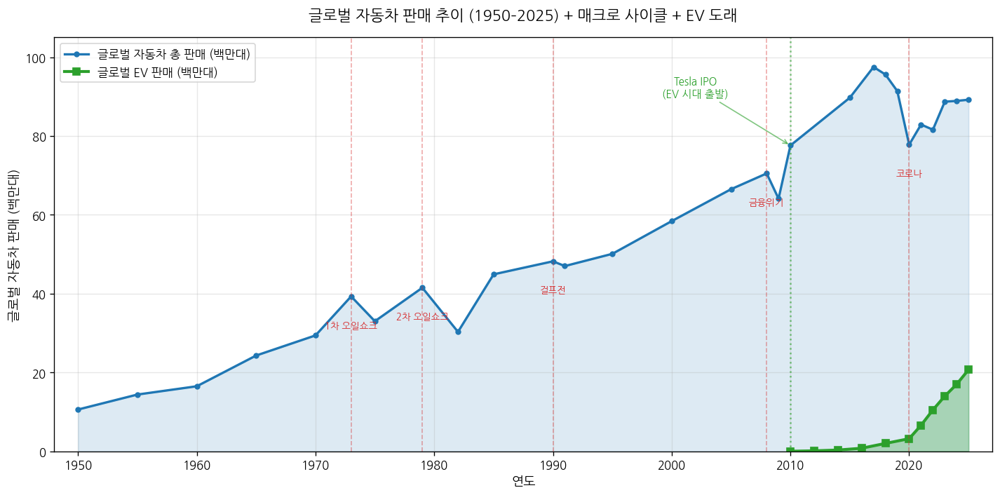
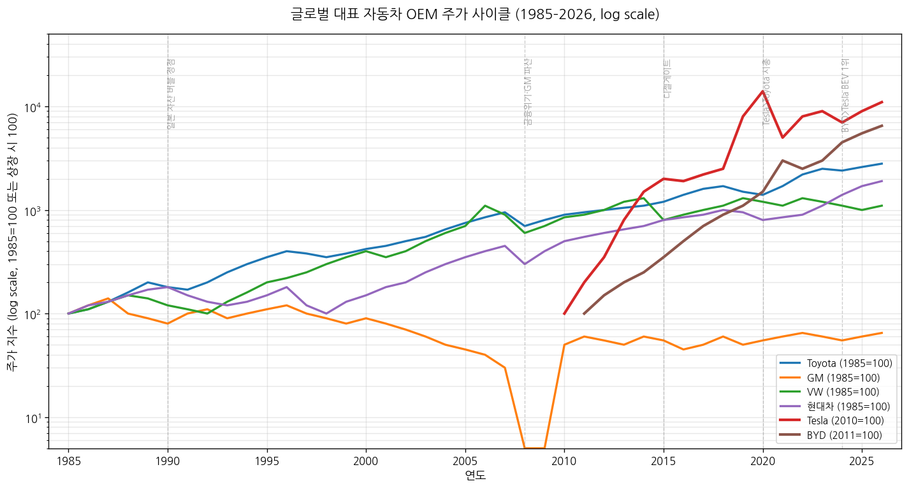
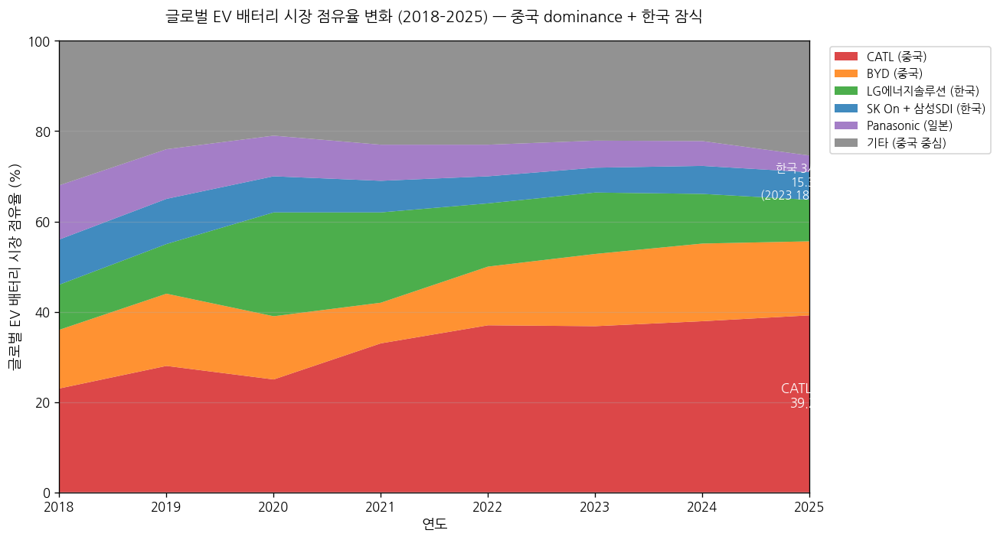
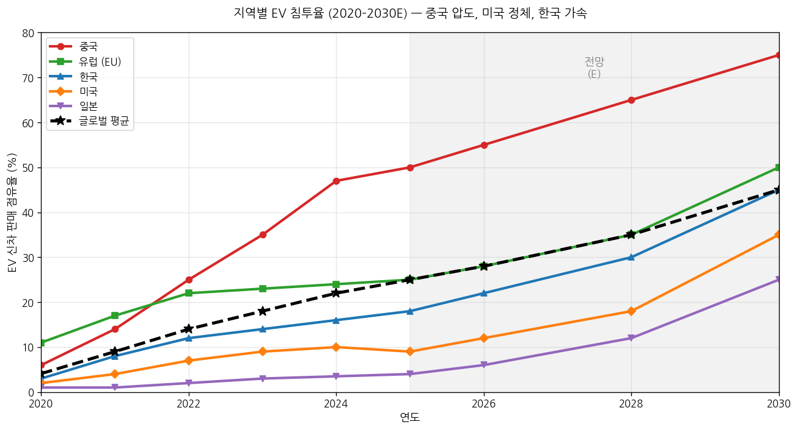

| 단계 | 핵심 결론 |
|---|---|
| 1. 역사 | 6 chunk: ① 1885–1908 발명·태동 ② 1908–1945 포드주의·대량생산·전쟁 ③ 1945–1973 미국 황금기·GM 패권 ④ 1973–1990 일본 추격·오일쇼크·lean 혁명 ⑤ 1990–2010 글로벌화·중국 시장 개방 ⑥ 2010–2026 전기차·자율주행·중국 부상 |
| 2. 사이클 | 이중 구조 — (a) 7~10년 매크로 사이클 (1973·1979·1990·2008·2020 5차례 글로벌 침체) (b) 30~40년 파워트레인 사이클 (1908 ICE 도래 → 2010s EV 전환) |
| 3. BM/밸류체인 | 8 layer: 소재 / 1차 부품(배터리·반도체) / Tier 1(모비스·보쉬) / Tier 2 / 완성차 OEM / 딜러·금융 / A/S·MRO / 모빌리티 서비스. 영업이익률 -5% ~ 25% |
| 4. 공급 (2000 vs 2026) | 완성차 분산 (CR5 ~45%). 배터리 CR3 65% 중국 압도 (CATL 39% + BYD 16% + LGES 9%). 자율주행 SoC CR3 85% (NVIDIA·Mobileye·Tesla). |
| 5. 수요 (2025) | 글로벌 판매 8,900만 대 (중국 30%, 유럽 18%, 미국 16%, 인도 5%). EV 25% (1/4가 EV), 2030E 40%+. 메가 트렌드 수요 비중 40%+. 정부 정책 의존 극대. |
| 4+5 종합 | F-수정형 이중 구조 (양극화) — ICE는 F(공급 과잉·정체), EV·배터리·자율주행은 A/B(메가 병목·수요 견인). 향후 5~7년 산업 reset 사이클 |
layered framework: 각 chunk를 (a)매크로 배경 (b)패권자 (c)산업 변화 (d)사이클 단계 (e)대표 기업 주가 (f)규제 — 6 layer로 풀어낸다. 트리거 시점은 일반인 친화 비유로 풀이.
19세기 후반은 제2차 산업혁명 절정기. 석유 정제(1859 미국 Drake 유정), 전기·통신(1870s 에디슨·벨), 강철 대량 생산(1856 Bessemer)의 3대 혁신 동시 발생. 1900년 뉴욕·런던 인구 350만·650만. 마차 분뇨가 도시 위생의 최대 골칫거리(뉴욕 1900년 일일 1,100톤). 자동차가 "탈마차 도시 솔루션"으로 주목.
비유: 자동차의 탄생은 "도시가 말 분뇨에 질식해가던 시대의 위생 혁명". 우리가 지금 EV를 "탈ICE 솔루션"으로 보는 시각이, 100년 전엔 자동차 자체가 "탈말 솔루션"이었다는 데자뷔.
독일·프랑스 발명 주도, 미국 양산 잠재력 부상. 독일: Karl Benz, Daimler·Maybach. 프랑스: Panhard, Peugeot. 미국: Olds·Ford·Cadillac·Buick 등 군소 OEM 수백 개 난립.
| 연도 | 이벤트 | 의미 |
|---|---|---|
| 1885 | Karl Benz 페이턴트 모터바겐 — 세계 최초 가솔린차 | 자동차 산업 공식 출발 |
| 1888 | Bertha Benz 106km 장거리 시운전 | 실용성 입증, 최초 마케팅 |
| 1889 | Daimler 4-stroke + 4-speed gearbox | 현대 자동차 기본 구조 확립 |
| 1903 | Ford Motor Company 설립 ($28K 자본금) | 100년 패권의 출발점 |
| 1908.8.12 | Ford Model T 출시 ($850) | 자동차 = 부자 장난감 → 대중 상품 |
비유: 이 시기 자동차는 "마차 시대의 페이턴트 휴대폰". 1900년대 미국 자동차 가격 $2,000~$4,000 = 노동자 연봉 4~10배 (오늘날 $400K+). Model T 도래 전까지 자동차는 록펠러·밴더빌트의 액세서리.
0차 사이클 — 산업 형성기. 1900년 미국 자동차 등록 8,000대 → 1908년 78,000대 (10배). 산업 표준·인프라(도로·주유소·정비) 부재.
대부분 비상장. Ford 1956년에야 상장, GM(1908 창업) 1916년 상장.
Model T 출시 → 1차대전(1914–18) → Roaring Twenties → 1929 대공황 → 2차대전(1939–45). 자동차 산업이 매크로 사이클과 직접 연동되기 시작한 chunk. 미국 자동차 보유율(1,000명당) 1908년 1대 → 1929년 187대 → 1945년 233대.
비유: 1908 Model T = "오늘날 iPhone 1세대 등장". Ford가 만든 건 자동차가 아니라 "자동차를 살 수 있는 중산층"이라는 새 시장 자체.
미국 단독 패권. 1929년 미국 글로벌 자동차 생산 85%. Big 3 형성: GM(1908, Sloan multibrand 전략), Ford, Chrysler(1925 창업). 일본은 Toyota(1937), Nissan(1933) 초기 단계.
| 연도 | 이벤트 | 의미 |
|---|---|---|
| 1908 | Ford Model T 출시 + GM 설립 (Buick·Olds·Oakland·Cadillac 통합) | 대중 자동차 + 멀티브랜드 OEM 모델 |
| 1913 | Ford Highland Park 이동식 조립 라인 | 생산시간 12.5시간→1.5시간 (8배 단축) |
| 1914 | Ford 5달러 일당·8시간 노동 | 노동자가 자기 만든 차 살 수 있는 임금 |
| 1923 | GM 점유율 Ford 추월 시작 | Sloan 다양화 vs Ford 단일 모델 한계 |
| 1927 | Model T 단종 (총 1,500만 대) | Ford 패권 1차 정점·전환점 |
| 1929–33 | 대공황 — 미국 자동차 생산 530만→140만 대 (-74%) | 1차 자동차 산업 침체 |
| 1937 | Toyota Motor Corporation 설립 | 일본 미래 패권자 잉태 |
| 1939–45 | 2차대전 — 자동차사 군용 차량·항공기 엔진 생산 | 산업 군수산업 전환 |
비유: Ford 이동식 조립 라인 = "도살장의 분해 라인을 거꾸로 한 것". 인류 산업 혁명의 가장 큰 productivity 점프(8배).
1차 사이클 형성·정점·침체: 1908–28 성장기 → 1929–33 대공황 → 1934–41 회복 → 1942–45 전쟁 (생산 중단).
GM 1916 상장, 1920s 상승 → 1929 폭락 (-90%). Chrysler 1925 상장. Ford는 1956년에야 상장.
전후 황금기 — 미국 GDP 1945년 $2.3T → 1973년 $6.6T (실질 2배). 베이비붐 8천만 명. 교외화·1956년 Interstate Highway Act(41,000마일). Marshall Plan으로 유럽 부활.
미국 Big 3 절대 패권. 1950년 미국 글로벌 점유율 75%. GM 50% 점유 (Sloan multibrand 절정). VW Beetle 폭발적 인기. Toyota Corolla(1966) 글로벌 베스트셀러 등극.
| 연도 | 이벤트 | 의미 |
|---|---|---|
| 1948 | VW Beetle 양산 (1972년 1,500만 대 누적) | 글로벌 베스트셀러 |
| 1956 | Interstate Highway Act | 자동차 수요 영구 lift |
| 1956 | Ford NYSE 상장 | 미국 자본시장 자동차주 비중 확대 |
| 1960 | 미국 빅3 점유율 85% (역대 최대) | 미국 패권 정점 |
| 1964 | Ford Mustang 출시 — Pony car 카테고리 | 마케팅 신화 |
| 1966 | Toyota Corolla 출시 | 일본 추격 출발점 |
| 1968 | Honda CVCC — 1970년 머스키법 최초 충족 | 일본 환경 기술 우위 |
| 1970 | 미국 머스키법 (Clean Air Act 개정) | 미국 빅3 기술 부담 |
| 1973.10 | 1차 오일쇼크 — OPEC 원유 4.5배 | 미국 빅3 위기의 시작 |
비유: 이 chunk 자동차 = "거대한 디트로이트 가전제품". 길이 5.5m·8기통·연비 5km/L. 1960s 미국 차는 디자인·크기·옵션으로 경쟁, 연비·품질은 신경 안 씀.
2차 사이클 — 전후 황금기 (1945–73). 28년간 글로벌 자동차 생산 1,000만→3,900만 대 (4배). 본격 침체 없음.
1973 1차 오일쇼크 (OPEC 원유 4.5배) → 1979 2차 오일쇼크 (이란 혁명, 2.5배). 미국 스태그플레이션, Volcker shock 금리 20%(1980). 1985 플라자합의로 엔 240→120 (2배 절상).
비유: 1973 오일쇼크는 자동차 산업의 "큰 빙하기". 연비 좋은 일본 소형차가 살아남고, 거대 공룡(미국 V8)이 멸종 위기. "포유류가 공룡 끝에 살아남는" 동물생태학 비유.
1973–80: 일본 미국 점유율 0%→17%. 1980 미국 베스트셀러 1위 Honda Civic·Toyota Corolla 진입. 1990 일본 글로벌 자동차 점유율 30%.
| 연도 | 이벤트 | 의미 |
|---|---|---|
| 1973.10 | 1차 오일쇼크 — 가솔린 $0.36→$0.55 | 일본 소형차 폭증 |
| 1975 | CAFE 27.5mpg 의무 (1985까지) | 미국 빅3 기술 부담 |
| 1979 | 2차 오일쇼크 — 가솔린 $0.86→$1.19. Chrysler 파산 직전 | 미 정부 $1.5B 구제 보증 |
| 1981 | 미·일 자율 수출 규제(VER) 168만 대 한도 | 일본 OEM 미국 현지 공장 가속 |
| 1982 | Honda Marysville(Ohio) — 일본 OEM 미국 첫 공장 | 글로벌 OEM 시대 출발 |
| 1984 | NUMMI 합작 (GM·Toyota) — 미국이 Toyota lean 학습 | 인사이트 이전 |
| 1985 | 플라자합의 — 엔/달러 240→120 | 일본 OEM 현지화 가속 |
| 1987 | MIT IMVP "Lean 생산" 용어 정립 | Toyota TPS 글로벌 학습 |
| 1989 | Toyota Lexus·Honda Acura·Nissan Infiniti | 일본 럭셔리 진출 |
| 1990 | 일본 자동차 글로벌 생산 1,350만 대 (미국 980만 추월) | 일본 패권 정점 |
비유: Toyota Production System(TPS) = "재고를 빚으로 보는 회계". JIT + Jidoka(무결점) + Kanban 3대 축. 1980s 일본 차 1대 생산비 미국 차보다 $1,500 저렴 + 결함 4배 적음.
1990–91 일본 자산 버블 붕괴 (닛케이 38,915p → 14,000p). 1995 WTO 출범. 1997 아시아 외환위기 (한국 자동차 산업 구조조정). 2001 중국 WTO 가입 — 거대 신규 시장 개방. 2008 글로벌 금융위기 → GM·Chrysler 파산. 2009 중국 1,360만 대 — 미국 1,040만 대 추월, 글로벌 1위.
일본 정점 → 점진적 후퇴. Big 3 36%→27%. 한국 진입: 현대(1967) + 1998 기아 인수. 2010 글로벌 다강 시대 (Toyota·GM·VW·현대기아·Ford 5강).
| 연도 | 이벤트 | 의미 |
|---|---|---|
| 1997 | Toyota Prius — 세계 최초 양산 하이브리드 | EV·전동화 진정한 출발점 |
| 1998 | DaimlerChrysler 합병 ($36B, 사상 최대 산업 M&A) | (2007 해소, 실패) |
| 1998 | 현대·기아 합병 (한국 외환위기 후) | 한국 OEM 글로벌 5위 발판 |
| 2001 | 중국 WTO 가입 — 외국 OEM 50:50 JV 의무 | 중국 시장 외국 OEM 본격 진입 |
| 2003 | Tesla Motors 설립 | EV 미래 패권자 잉태 |
| 2003 | BYD Auto 설립 | 중국 EV 미래 패권자 잉태 |
| 2007 | Tesla Roadster — Li-ion 첫 양산 EV | EV 산업 형성 신호탄 |
| 2008 | 금융위기 — 미국 자동차 판매 1,610만→1,040만 대 (-35%) | 대형 사이클 침체 |
| 2009.4–6 | Chrysler·GM 파산 보호, 미 정부 $80B 구제 | Big 3 정부 관리 |
| 2009 | 중국 글로벌 1위 자동차 시장 등극 (1,360만 대) | 중국 시대 본격 개막 |
| 2010 | Tesla Model S 발표 + IPO ($17/주) | EV 산업화 출발점 |
2010s 저금리·QE → 2017 글로벌 자동차 9,750만 대 정점. 2018 미·중 무역분쟁. 2020 코로나 -16%. 2021–23 반도체 부족. 2022 IRA. 2024 EU 중국 EV 관세. 2025–26 미국 신정부 EV 보조금 축소·관세 강화.
비유: 이 chunk = "자동차 산업의 100년 만의 파워트레인 혁명 + 패권 재이동". 1908 ICE 도래 후 100여 년 만에 EV가 새 표준으로 등장. 마치 1980s 일본 추격을 2020s 중국·EV가 5배 큰 규모·2배 빠른 속도로 재현.
| 연도 | 이벤트 | 의미 |
|---|---|---|
| 2010.6 | Tesla IPO ($17/주, 시총 $1.7B) | EV 산업화 신호탄 |
| 2012 | Tesla Model S ($80K, 426km) | 럭셔리 EV 첫 성공 |
| 2014–16 | VW 디젤게이트 ($30B+ 벌금) | 디젤 시대 종말, EV 가속 |
| 2017 | Tesla Model 3 출시 ($35K 목표) | EV 대중화 출발 |
| 2019 | Tesla 상하이 기가팩토리 | 중국 진출, 가격 인하 |
| 2020.6 | Tesla 시총 Toyota 추월 | 자동차 평가 paradigm shift |
| 2021.11 | Tesla 시총 $1.2T 정점 | EV 평가 정점 |
| 2022.8 | 미국 IRA — EV 보조금 $7,500 + 배터리 미국 생산 의무 | 미국 EV 산업정책 대전환 |
| 2023 | BYD 글로벌 BEV 판매 Tesla 추월 (4Q) | EV 패권 변화 |
| 2024 | 현대기아 글로벌 3위 등극 (730만 대, GM 추월) | 한국 OEM 사상 최고 위상 |
| 2024.6 | EU 중국 EV 관세 17–38% | EU·중국 무역 마찰 본격화 |
| 2024 | 미국 중국 EV 관세 100% — 사실상 차단 | 디커플링 본격화 |
| 2025 | Waymo 연 1,400만 회 무인 자율주행 운행 | 로보택시 양산 진입 |
| 2025.5 | Tesla 누적 supervised FSD 100억 마일 (2026.5) | 자율주행 데이터 격차 |
| 2025 | 글로벌 EV 판매 2,070만 대 (전체 25%) | "1/4가 EV" 시대 |
| 2025 | CATL 글로벌 EV 배터리 점유율 39.2% | 중국 배터리 패권 강화 |
| 2026 | Toyota 1위, BYD 2위, 현대기아 3위, VW 4위 | 중국 OEM 글로벌 빅3 진입 |
비유: 자동차 산업은 가전화·소프트화·중국화의 3중 변화 동시 진행. 가전화 = ICE 부품 30,000→EV 15,000개, 소프트화 = SDV·자율주행이 차량 가치의 30%+, 중국화 = BYD·Geely·Chery 등 글로벌 빅10 진입.
| 침체 차수 | 시기 | 트리거 | 미국 자동차 판매 변동 |
|---|---|---|---|
| 1차 | 1929–33 | 대공황 | -74% (530만→140만) |
| 2차 | 1973–75 | 1차 오일쇼크 | -23% YoY (1974) |
| 3차 | 1979–82 | 2차 오일쇼크 + Volcker shock | -27% |
| 4차 | 1990–91 | 1차 걸프전 | -10% |
| 5차 | 2001 | 닷컴 + 9·11 | -3% |
| 6차 | 2008–09 | 글로벌 금융위기 | -35% (GM·Chrysler 파산) |
| 7차 | 2020 | 코로나 | -16% (글로벌 8,800만→7,800만) |
| 파워트레인 사이클 | 시기 | 트리거 | 결과 |
|---|---|---|---|
| 1차 ICE 도래 | 1885–1908 | 내연기관 발명·Model T | 마차 산업 소멸 (1900 미국 마차사 11,500 → 1925 5사) |
| 1차 ICE 절정·고도화 | 1908–1973 | 대량생산·하이웨이 | 미국 Big 3 패권 |
| 1차 ICE 성숙·일본 추격 | 1973–2010 | 오일쇼크·환경 규제 | 일본 lean 패권 |
| 2차 EV 도래 | 2010–2030E | Tesla·중국 EV 정책·기후 | BYD·테슬라·중국 OEM 부상 |
현재 위치: 2026년은 EV 파워트레인 사이클의 도래기 후반·도입기 초반. 글로벌 EV 침투율 25%. 2030년 40%+. 글로벌 자동차 패권의 90년 만의 대전환기.
| Chunk | 시기 | 매크로 사이클 | 파워트레인 사이클 |
|---|---|---|---|
| Chunk 1 | 1885–1908 | 0차 (형성기) | 1차 ICE 도래기 |
| Chunk 2 | 1908–1945 | 1차 (대공황·전쟁) | 1차 ICE 절정 진입 |
| Chunk 3 | 1945–1973 | 2차 (전후 황금기) | 1차 ICE 절정 |
| Chunk 4 | 1973–1990 | 3차 (오일쇼크) | 1차 ICE 성숙 |
| Chunk 5 | 1990–2010 | 4차 (글로벌화·금융위기) | 1차 ICE 정점, 2차 EV 도래 신호 |
| Chunk 6 | 2010–2026 | 5차 (코로나·반도체) | 2차 EV 도래기 진행 중 |

→ 출처: OICA·Statista·본 분석. 5차례 매크로 침체 + 2010년대 EV 도래 시점 강조

→ 출처: Bloomberg·Yahoo Finance·본 분석. log scale. Tesla·BYD의 폭발적 상승 vs GM의 2009 파산·횡보 대비
자동차 산업 매출 $3T 중 완성차 OEM 약 50% ($1.5T), 부품·소재 35% ($1.05T), 딜러·금융·A/S 15% ($450B). 반도체보다 layer 깊고 분산형.
| 종류 | 대표 기업 | BM | 영업이익률 |
|---|---|---|---|
| 철강·알루미늄 | POSCO·ArcelorMittal·Alcoa·Novelis | 고장력강·알루미늄 판재 | 5~12% |
| 리튬·니켈·코발트·구리 | Albemarle·SQM·Glencore·CMOC | 광산 채굴·정련 | -5%~30% |
| 합성수지·고무 | LG화학·SK이노·BASF·Bridgestone | 플라스틱·타이어 | 5~15% |
| 종류 | 대표 기업 | 전망 |
|---|---|---|
| 엔진·변속기 | Aisin·ZF·Magna Powertrain·Borg-Warner | 2030까지 -30~50% |
| 연료·배기 | Faurecia·Tenneco·Eberspächer | 구조적 축소 |
| 종류 | 대표 기업 | 진입장벽 | OPM |
|---|---|---|---|
| 배터리 셀 | CATL·BYD·LGES·SK On·삼성SDI·Panasonic | $5B+ Gigafactory CapEx | -5%~20% |
| 배터리 소재 | Posco Future M·Umicore·BTR·Easpring | 화학 IP·합성 노하우 | 5~15% |
| 자동차반도체 (MCU·전력) | Infineon·NXP·Renesas·STMicro·온세미 | AEC-Q100, 25년+ 신뢰성 | 15~30% |
| 자율주행 SoC | NVIDIA·Mobileye·Tesla·Qualcomm·화웨이 | AI 알고리즘·생태계 | 30~60% |
| 모터·인버터 | Nidec·Bosch·BorgWarner·현대모비스·LG마그나 | 자기력·전력 변환 | 8~15% |
| Layer | 대표 기업 | BM | OPM |
|---|---|---|---|
| 3. Tier 1 (System Integrator) | Bosch·Continental·Magna·Denso·현대모비스 | 모듈·시스템 통합 | 4~8% |
| 4. Tier 2 (Specialist) | Adient·Faurecia·Bridgestone·만도·한온 | 차체·시트·타이어·디스플레이 | 3~15% |
| 5. 완성차 OEM | Toyota·VW·현대기아·GM·Stellantis·BYD·Tesla | 양산·딜러·금융 통합 | 5~25% |
| 6. 딜러·금융 | AutoNation·Penske·OEM 금융사·현대캐피탈 | 판매·할부 | 2~5% |
| 7. A/S·MRO·중고차 | NAPA·O'Reilly·AutoZone·현대모비스 A/S | 부품·정비 | 8~20% |
| 8. 모빌리티 서비스 | Uber·Lyft·DiDi·Waymo·Tesla·카카오모빌리티 | 플랫폼·로보택시 | 적자~5% |
| Layer | 한국 직접성 | 비고 |
|---|---|---|
| 완성차 OEM (현대기아) | 매우 높음 | 글로벌 3위, EV 전환 빠름 |
| 배터리 셀 (LGES·SK On·삼성SDI) | 중간 | 글로벌 15.3%, 중국에 잠식 중 (2023 18% → 2025 15%) |
| 배터리 소재 (양극재·분리막) | 중간 | 양극재·분리막 강세, 음극재 약점 |
| Tier 1 (현대모비스·만도·한온) | 높음 | 현대차그룹 종속도 80%+ |
| 자동차반도체 | 낮음 | 자급률 5% 미만 |
| 자율주행 SW/SoC | 매우 낮음 | NVIDIA·Tesla·Waymo 의존 |
| 모빌리티 서비스 | 낮음 | 카카오모빌리티 등 국내 한정 |
| 구분 | 1990 | 2008 | 2026 (현재) |
|---|---|---|---|
| 글로벌 메이저 OEM 수 | 약 25개 | 약 20개 | 약 18개 + 중국 신생 EV 5개 |
| OEM CR5 | 약 50% | 약 50% | 약 45% (분산화) |
| OEM CR10 | 약 75% | 약 75% | 약 70% |
자동차 OEM은 반도체 메모리만큼 집중화되지 않음. 그러나 segment별 집중화는 빠름 — 특히 EV·배터리·자율주행.
| 순위 | OEM | 2025 판매 (만대) | 비고 |
|---|---|---|---|
| 1 | Toyota | 1,036 | 7년 연속 1위 |
| 2 | BYD | 460 (전체) / 226 (BEV) | 글로벌 EV 1위 등극 |
| 3 | Hyundai-Kia | 727 | 한국 OEM 사상 최고 위상 |
| 4 | VW Group | 900 (추정) | EV 전환 비용 부담 |
| 5 | GM | 550 | |
| 6 | Stellantis | 540 | |
| 7 | Honda | 380 | |
| 8 | Ford | 410 | |
| 9 | Renault-Nissan-Mitsubishi | 770 (합산) | 동맹 |
| 10 | Tesla | 178 (BEV) | BEV 글로벌 9% |
| 순위 | 배터리사 | 2025 글로벌 M/S | 비고 |
|---|---|---|---|
| 1 | CATL (중국) | 39.2% | 압도적 1위, LFP·NCM 풀라인업 |
| 2 | BYD (중국, 내재화) | 16.4% | LFP·Blade Battery |
| 3 | LG에너지솔루션 | 9.2% | NCM 고급, GM·테슬라·현대기아 향 |
| 4 | CALB (중국) | 5.3% | 신흥 |
| 5 | Gotion (중국) | 4.5% | VW 일부 출자 |
| 6 | SK On | 3.7% | 미국 IRA 의존 |
| 7 | Panasonic | 3.7% | Tesla 향 |
| 9 | Samsung SDI | 2.4% | BMW·Audi·Stellantis 향 |
| CR3 | 64.8% | 중국 2사 + 한국 1사 | |
| 중국 합산 | ~69% | ||
| 한국 3사 합산 | 15.3% | 2023 18% → 2025 15% (잠식) | |

→ 출처: SNE Research·CnEVPost. 2018→2025 8년 추이. CATL 점진적 압도 + 한국 3사 잠식 가시화
| 기업 | SoC | 2025 점유 |
|---|---|---|
| NVIDIA Drive (Thor·Orin) | Mercedes·Volvo·현대·중국 OEM 다수 | 약 40% |
| Mobileye (Intel 자회사) | BMW·Audi·Ford·Honda·GM | 약 30% |
| Tesla FSD HW3/4/5 | Tesla 자체 | 약 15% |
| Qualcomm Snapdragon Ride | GM·BMW·Volvo·Stellantis | 약 10% |
| 화웨이 | 중국 OEM | 약 5% |
| 진입장벽 | ICE 시대 | EV 시대 |
|---|---|---|
| 엔진·변속기 노하우 | 매우 높음 (50년+ R&D) | 무력화 — EV에 엔진 없음 |
| 신규 OEM 1공장 CapEx | $3–5B | $5–10B (배터리 포함) |
| 배터리 공장 1개 | n/a | $3–5B 신규 진입장벽 |
| 자율주행 SW | 단순 ADAS | 수십억 마일 데이터 + AI 인재 |
| 글로벌 딜러망 | 50년+ 구축 | 직판(Tesla 모델) — 약화 |
글로벌 8,900만 대 = 승용차 7,100만 대 (B2C 80%, 법인 fleet 20%) + 상용차 1,800만 대 (트럭 600만, 픽업·LCV 800만, 버스 200만, 기타 200만).
| 지역 | 판매 (만대) | 비중 | EV M/S |
|---|---|---|---|
| 중국 | 2,700 | 30% | 50%+ |
| 유럽 (EU+영국) | 1,600 | 18% | 25%+ (노르웨이 95%) |
| 미국 | 1,450 | 16% | 9% (정체·후퇴) |
| 인도 | 450 | 5% | 4% |
| 일본 | 460 | 5% | 4% (가장 느림) |
| 기타 | 2,240 | 26% | 다양 |
| 한국 | ~170 | 2% | 18% |
| 글로벌 합산 | 8,900 | 100% | 25% |

→ 출처: IEA·ICCT·Counterpoint Research. 중국 압도 / 미국 정체·후퇴 / 한국·유럽 가속 / 일본 가장 느림
| 메가 트렌드 | 2020 | 2025 | 2030E |
|---|---|---|---|
| 전동화 (BEV+PHEV) | 5% | 25% | 40~50% |
| 자율주행 (L2+ 채택) | 10% | 30% | 60%+ |
| 커넥티드 카 | 30% | 60% | 90%+ |
| 모빌리티 서비스 | 미미 | 1% | 5~10% |
| 합산 직접 수혜 | ~20% | ~40% | ~70% |
자동차 산업은 단일 카테고리로 분류 불가. 세그먼트별로 양극화된 이중 구조.
F 공급 과잉 + 수요 정체
→ 점진적으로 카테고리 G(구조조정 진행/완료)로 이동 중.
B/A 수요 견인 + 공급 적당/제한
[4번 공급 fact 요약]
ICE: 공급 과잉 (글로벌 utilization 70% 미만)
EV: 공급 적당 + 배터리·자율주행 SoC 일부 병목
완성차: 분산형 (CR5 ~45%)
배터리: 빠른 집중화 (CR3 65%)
자율주행 SoC: 압도적 집중 (CR3 85%)
[5번 수요 fact 요약]
글로벌 판매 정체 (8,900만 대, CAGR 0~2%)
EV 25%→2030E 40~50% (고성장)
자율주행 L2+ 30%→60% (고성장)
메가 트렌드 직접 수혜 40%→70% (5년 내)
정부 정책 의존도 매우 큼
→ 현재 산업은 [F-수정형] 카테고리 위치 (이중 구조 양극화)
→ 근거:
• ICE: F (공급 과잉 + 수요 정체) → G로 이동 中
• EV·배터리: B (수요 견인 + 공급 적당)
• 자율주행 SoC·자동차반도체: A (구조적 메가 병목)| 항목 | 2010 | 2017 (정점) | 2020 (코로나) | 2025 | 2030E |
|---|---|---|---|---|---|
| 글로벌 자동차 판매 (만대) | 7,500 | 9,750 | 7,800 | 8,900 | 9,000~9,500 |
| 글로벌 EV 판매 (만대) | 1.5 | 110 | 320 | 2,070 | 4,000~5,000 |
| EV 침투율 | 0.02% | 1.1% | 4.1% | 25% | 40~50% |
| 자동차 산업 매출 ($T) | 1.5 | 2.5 | 2.0 | 3.0 | 3.5~4.0 |
| 배터리 시장 ($B) | 5 | 30 | 70 | 200+ | 400+ |
| 자동차반도체 ($B) | 25 | 35 | 38 | 60 | 100+ |
| 자율주행 (L2+) 침투율 | <1% | 10% | 15% | 30% | 60%+ |
| 글로벌 OEM 빅3 | Toyota·VW·GM | Toyota·VW·GM | Toyota·VW·GM | Toyota·VW·현대기아 | Toyota·BYD·VW |